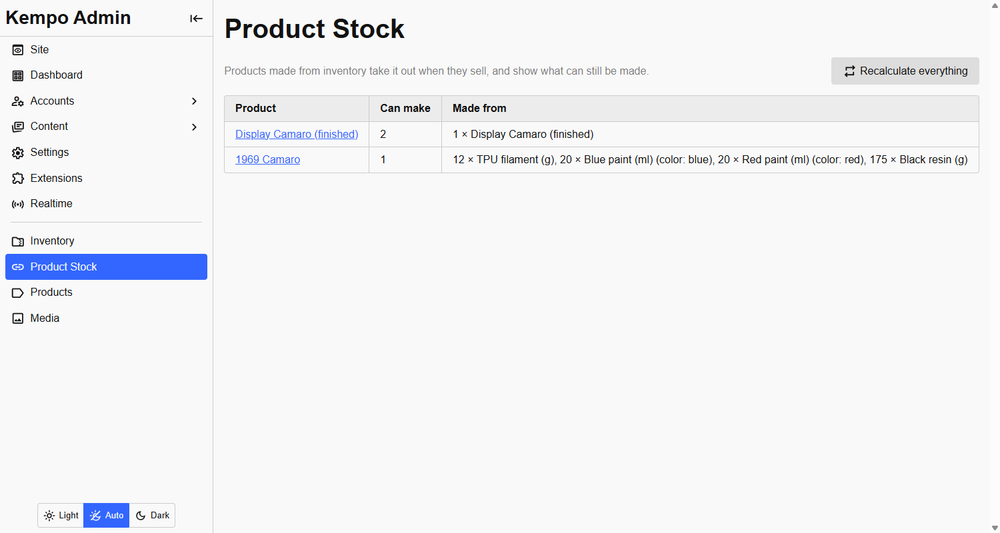

<page pageName="Selling" title="Selling - Kempo Products Inventory">
  <content>
    <h2 id="selling">Selling takes the materials</h2>
    <p>When a sale is added to kempo-products' ledger (an entry that takes quantity from a linked product), this extension takes every material the product uses out of inventory in <strong>one atomic call</strong>. Either all of them are taken or none are, so a sale never takes the resin and then finds the paint short.</p>
    <ul>
      <li>The amount is the per-unit amount times the quantity sold, for the materials that match the choices sold (the line's <code>options</code>).</li>
      <li>Every inventory movement carries the order reference, written into its note, so you can find what an order took.</li>
      <li>An entry is added once per reference, so adding the same one again does not take anything twice. If any material is short the entry is refused and nothing is taken.</li>
    </ul>

    <h2 id="quantity-follows" class="mt">Quantity follows the materials</h2>
    <p>A linked product's quantity is <strong>how many can be made from what is on hand</strong>: for each material, the quantity in inventory divided by the amount per unit, rounded down, and the smallest of those numbers wins. The scarcest material limits the product.</p>
    <div class="mb">
      
      <small class="d-b tc-muted">The Product Quantity page lists every linked product and what limits it.</small>
    </div>
    <p>Choices are worked out the same way: a colour is <strong>marked sold out</strong> when there is not enough of the materials it needs for one more.</p>

    <h2 id="shared" class="mt">Products that share materials</h2>
    <p>Two products can use the same material, and both stay correct. With 300 g of PLA and two products that each need 200 g, each shows 1 in stock. Sell one and 100 g is left, so <strong>both</strong> go out of stock, because neither can be made any more.</p>

    <h2 id="restocking" class="mt">Restocking</h2>
    <p>Receiving resin in the inventory, or correcting a count, recalculates every product made from that item straight away. A product that was out of stock comes back, with no action in the products admin.</p>

    <h2 id="reversing" class="mt">Putting a sale back</h2>
    <p>When an entry that puts a sale back is added (a refund or a cancelled order: <code>undoes</code> is the sale's reference), exactly what the sale took is put back. The extension remembers the amounts it took for each reference, so it is correct <strong>even if the links were edited since</strong>. Putting back twice puts back once. Adding to a linked product without saying which sale it undoes is refused, because its quantity follows the materials.</p>
  </content>
</page>
